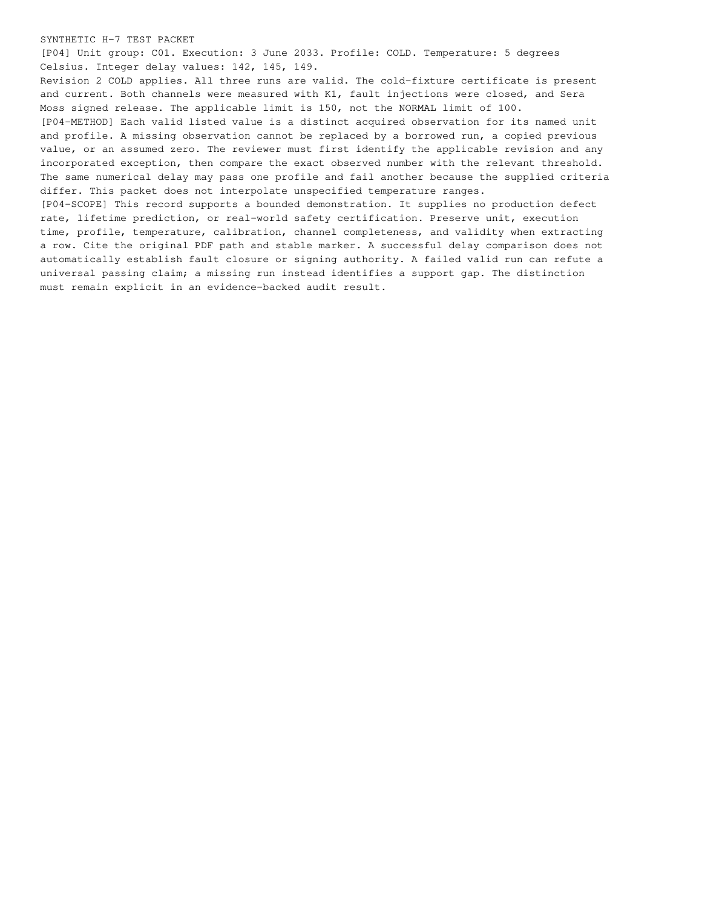

runs/09-multiversion-safety-mixed/visual-review/test-page-4.png
Open / download original bytes

validation/runs/09-multiversion-safety-mixed/visual-review/test-page-4.png · 141,924 bytes · SHA-256 06eb6e7ec8c3c9cacb6b92e10551ecbb5eb98cd5ca54d2b9b8970b0d7378ee27
